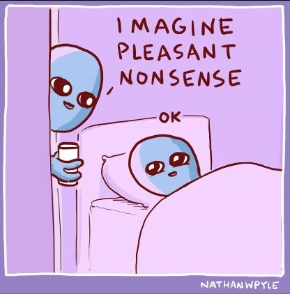

The art of producing illusions by sleight of hand. Tricks that allow people (such as wizards) to do impossible things by saying special words or performing special actions.
--Merriam-Webster
"Words do not give life; they merely symbolize it. Thus all “explanations” of the universe couched in language are circular, and leave the most essential things unexplained and undefined. The dictionary itself is circular. It defines words in terms of other words."
--Alan Watts
My client tells me they already know what I just said.
They've heard it before. They've read it, discussed it, been following various approaches about it for years, thank you very much.
Yay! This should make things easy for me.
But then somehow, they won’t actually do whatever it is I’m asking, or answer whatever it is I asked.
They just want to talk about their experience. They wants to discuss what they know. They want to compare one guy's theoretical concepts to another's and discuss if they agree.
And most most most of all, they want to repeatedly- endlessly- talk about what the triggers and explanations and causes of their situation might be.
They’re all about the explanations and causes.
Apparently all this talking about stuff is very compelling.
And as they begin to elaborate on how they feel and how, whatever I might happen to be talking about, that’s certainly not it-
it is clear to me they’re in a trance.
A dream world created by constant description rather than actual living.
As if all those words are an incantation.
This is part of what so many folks refer to as “getting it intellectually.”
A removal, a distance from actual life, created by walls of words, symbols, images, descriptions, and feels-likes.
Which is why so much of what I do has to involve magic.
Not casting-of-spells magic, of course- no cape or wand involved.
More like the breaking of spells- a sleight of hand where, while people are watching the gloved hand, somehow the other pulls a rabbit out of a hat which also wasn’t even noticed before.
Because nothing else can break through all those syllables and descriptions.
Though even when they're deliberately looking, trying, to figure out what I’m up to, in hopes of explaining and discussing even that, they still are unable to see the magic.
Partly because my part in our conversations looks like just ordinary words. Insignificant words, even. Silly, wasting-everyone’s-time, nit-picking words.
Turns out that the same language, the same wand, the same pixie dust which puts folks into the dream can also snap them out of it.
Words can cast spells, and words can break them.
Which is lucky for them. Because after all, as everyone knows, if the magician explains the trick, it no longer works.
And they do want it to work or they wouldn't be calling me.
As for you, lovely reader, it is more than a little likely that you too cast your own spell, weave your own dream world, remove yourself from experience with words and descriptions.
Yep even you.
So in celebration of the new year, here’s a little giftie for you. Just a small something different, a little game to play with your own hallucinatory world.
Just for fun.
Think of a situation in your life which is not what you want. Something that feels not great.
Whatever it is, with your eyes closed, go to it and put yourself in it as completely as you can.
Immerse.
Hear the sounds, see the colors, smell the smells, touch everything.
Yes of course it’s imagination. Perfect. What isn’t.
Resist the autopilot urge to describe how you are feeling or if you like what’s happening or if you are uncomfortable or if it doesn't count because you know you are imagining.
Those are words which will immediately remove you from this play and perpetuate your unintentional imagined experience,
Instead of keeping you in our game, which is an on-purpose imagined experience.
So there you are, fully in your scenario.
And then, hold on tight to it. Make the experience stay.
No matter what.
Keep hearing the sounds. Keep seeing the sights. Keep feeling the sensations.
Make every bit of this virtual experience continue.
See if that can be done, without describing, without stating how you feel and think about the situation, without analyzing if this game is doing anything for you.
See if it’s possible to stay in this experience without any evaluation or commentary.
See what happens to experience when words don’t pin it down.
Abracadabra.
Poof.
Like magic.
k.
Click here to watch Judy on Buddha at the Gas Pump
Click to watch Judy and Walter have fun chatting about about
nonduality, the self, consciousness, awareness, free will
and other light and breezy stuff
Judy And Robert Saltzman talk nonduality
and again: https://www.youtube.com/watch?v=7fv_vsvaejs
and again: https://www.youtube.com/watch?v=3DAn8Rqg3I0
"Love sometimes gets tired of speaking sweetly
And wants to rip to shreds all your erroneous notions of truth...
The Beloved sometimes wants to do us a great favor:
Hold us upside down and shake all the nonsense out."
--Hafiz
